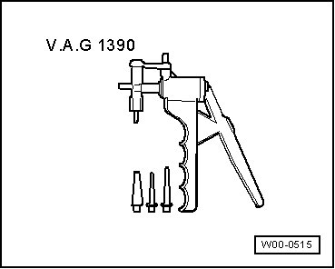
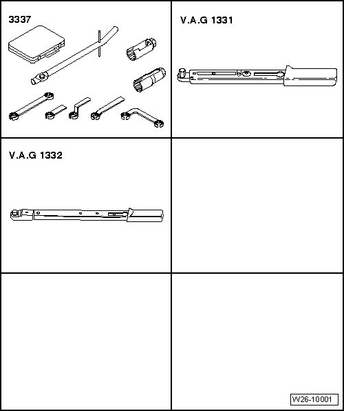

Exhaust System: Tools and Equipment
Special Tools
Special tools, testers and auxiliary items required
• Hand vacuum pump (V.A.G 1390)


Special tools, testers and auxiliary items required
• Ring spanner 7-piece set for oxygen sensor (3337)
• Torque wrench (5 to 50 Nm) (V.A.G 1331)
• Torque wrench (40 to 200 Nm) (V.A.G 1332)